Disciplinas
VERIFICAÇÃO, VALIDAÇÃO E TESTE DE SOFTWARE. Concluído
Materiais
[UFMS Digital] Verificação, Validação e Teste de Software - Módulo 3 - Unidade 2
Prof° ministrante: Leonardo Souza Silva.
Em nossa última aula.
- Conhecemos diretrizes que apontam o que deverá ser documentado durante o Teste de Software.
- Importância da Documentação de Teste de Software no contexto do processo de desenvolvimento.
Verificação e Validação (V&V).
- Verificação
- Estamos construindo corretamente o produto?
- Assegurar consistência, completitude e corretitude do produto em cada fase e entre fases do desenvolvimento.
- Validação
- Estamos construindo o produto certo?
- Assegurar que o produto final corresponda aos requisitos.
Revisões de Software.
- Funcionam como um filtro para a gestão da qualidade;
- Aplicadas em várias fases do processo de desenvolvimento;
- Revelam defeitos;
- Purificam os artefatos da engenharia de software
- Subproduto concreto ou intangível produzido durante o processo de desenvolvimento de software.
- Realizada antes da fase de Teste de Software.
- Consideradas fundamentais para sistemas críticos.
- Software que pode levar a consequências catastróficas em caso de falha.
(Pressman, 2021);
Podem ser:
- Informais
- não exige métodos rígidos para verificação de possíveis erros (Ex: teste de mesa e revisão em pares*);
- Alguns autores colocam a revisão em pares (Peer Review) como uma técnica informal (Pressman, 2021), enquanto outros autores podem citar como formal.
- Formais
- exigem conhecimentos e rigidez no processo de revisão;
- Revisão Técnica Formal (RTF), também chamada de técnicas de revisão formal.
- Descoberta precoce de erros reduz os custos de correção;
- Financeiro e de tempo;
- Atenção!!!
- Pode haver a falsa impressão que a realização de RTF ́s seja um desperdício de tempo e dinheiro;
- No médio prazo, os custos tendem a ser maiores em projetos que não realizaram revisões.
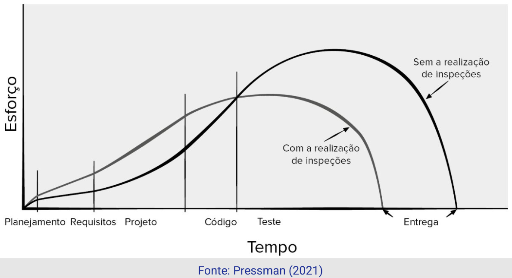
Revisão Técnica Formal — Objetivos
- Descobrir erros função, lógica ou implementação;
- Observar se os requisitos estão sendo atendidos;
- Respeito aos padrões predefinidos;
- Uniformidade no processo de desenvolvimento;
- Favorecer o gerenciamento dos projetos.
Revisão Técnica Formal — Walkthrough
- Execução passo a passo de parte de um software com vistas a encontrar erros.
- Equipe de revisão buscará simular a execução de um artefato.
- Duração aproximada de 2 horas;
- Equipe de 3 a 5 pessoas.
Revisão Técnica Formal — Inspeções
- Revisão em equipe de um determinado artefato;
- Artefato analisado é distribuído, em seguida ocorre a reunião onde os erros encontrados são mencionados.
- Duração aproximada de 2 horas;
- Equipe de 5 pessoas.
- Pré-condições:
- Uma especificação “precisa” deve estar disponível;
- Equipe deve estar familiarizada com os padrões organizacionais;
- O código sintaticamente correto ou outras representações de sistema devem estar disponíveis;
- Um checklist de erros deve ser preparado;
- NÃO deve ser usado para avaliar o profissional.
- Procedimento:
- Apresentar a visão geral do artefato;
- Documentos associados previamente distribuídos à equipe;
- Registro dos erros descobertos na revisão;
- Correção dos erros descobertos;
- Avaliar a necessidade de realização de nova revisão.
- Papéis
- Autor/Proprietário, Inspetor, Leitor, Relator e Moderador.
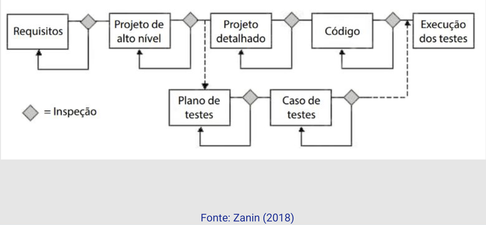
Revisão Técnica Formal — Relatório Final
- Indica a decisão:
- Aceitar o artefato sem modificações adicionais;
- Aceitar o artefato condicionado as correções;
- Sem necessidade de nova revisão.
- Rejeitam o artefato devido a erros graves.
- Necessária nova revisão.
- Mostra o que foi revisado, quem revisou, as descobertas e conclusões.
Revisão Técnica Formal — Diretrizes
- Revisar o produto, não o produtor;
- Observância a agenda estabelecida;
- Limitar debates e refutação;
- Notas devem ser registradas;
- Insistir na preparação antecipada;
- Investir na lista de verificação para o artefato revisado;
- Alocar tempo suficiente para realização da RTF (2 horas);
- Treinar os participantes, e
- Revisar revisões iniciais (histórico).
Revisão Técnica Formal — Resumo
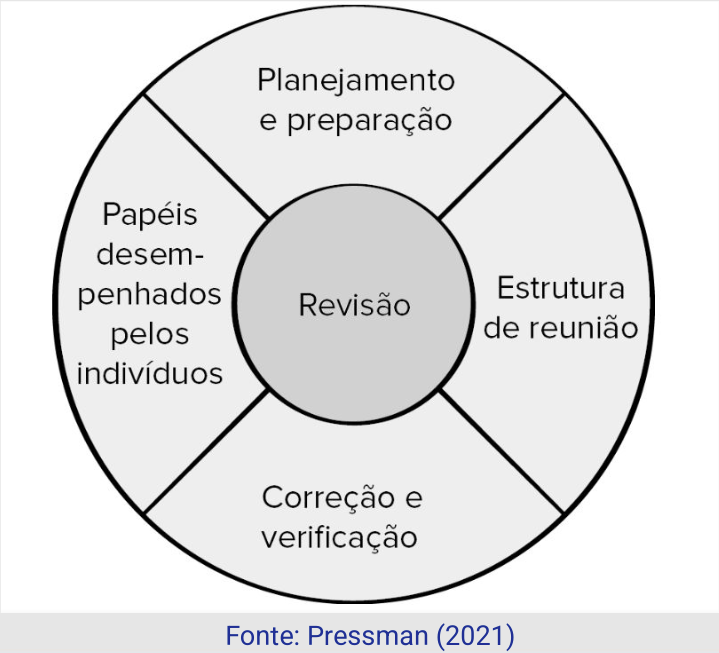
...
Ex.: Checklist de Inspeção
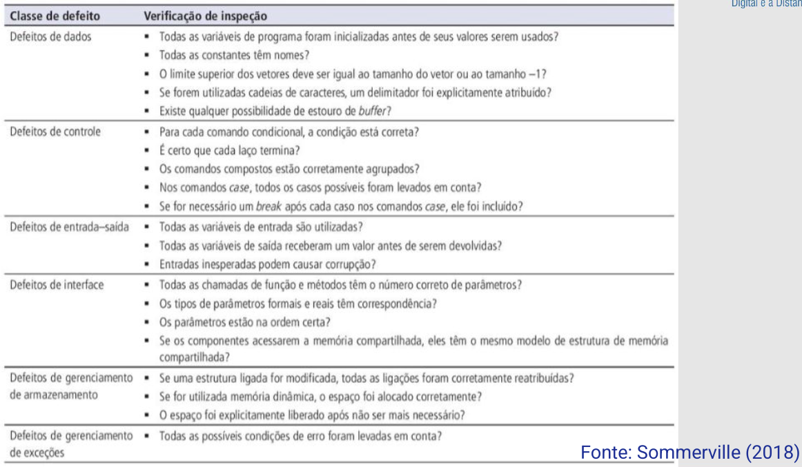
...
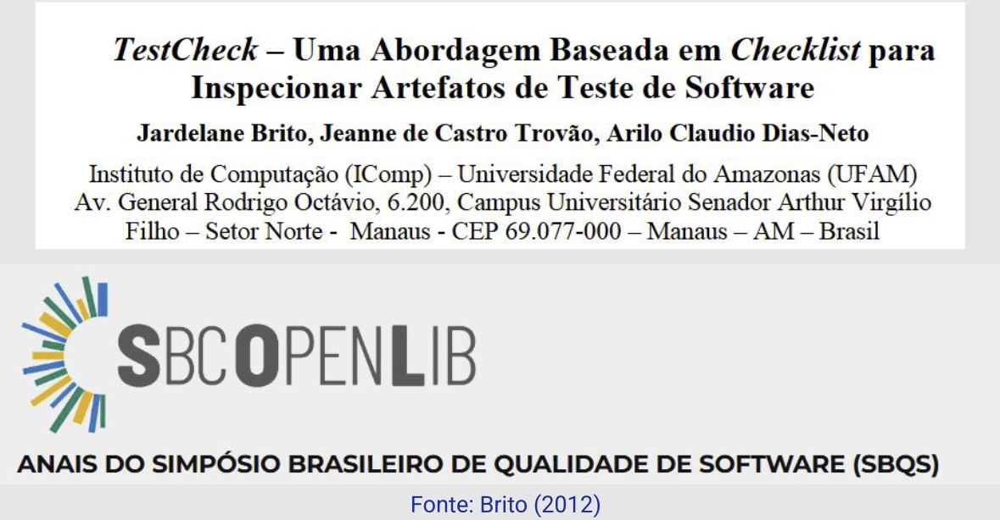
...
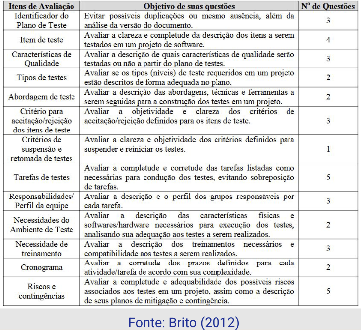
...
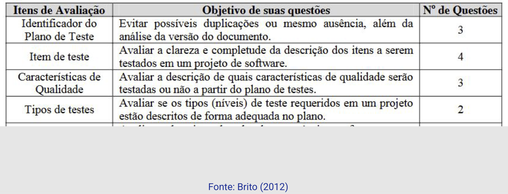
...
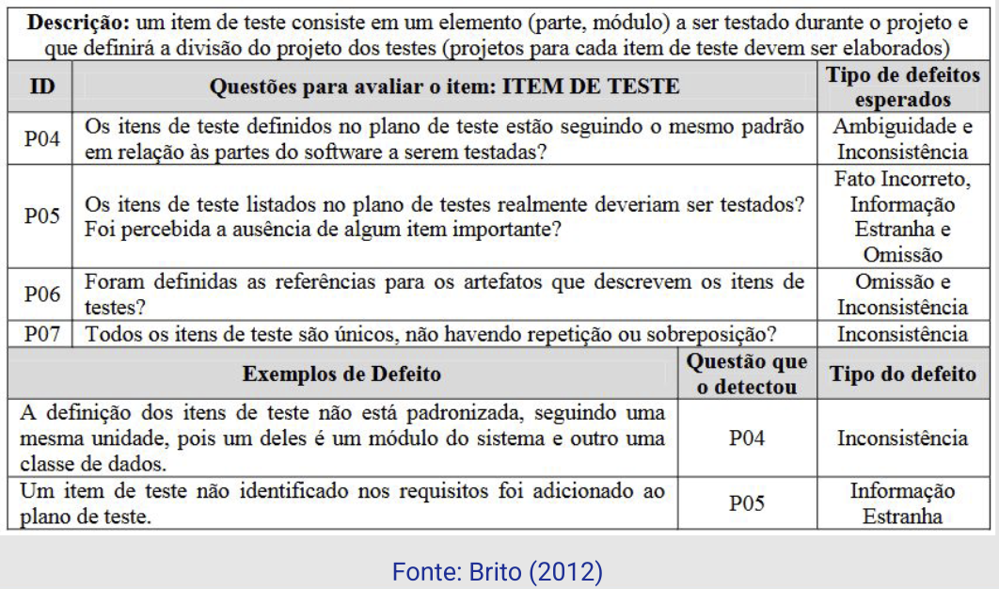
...
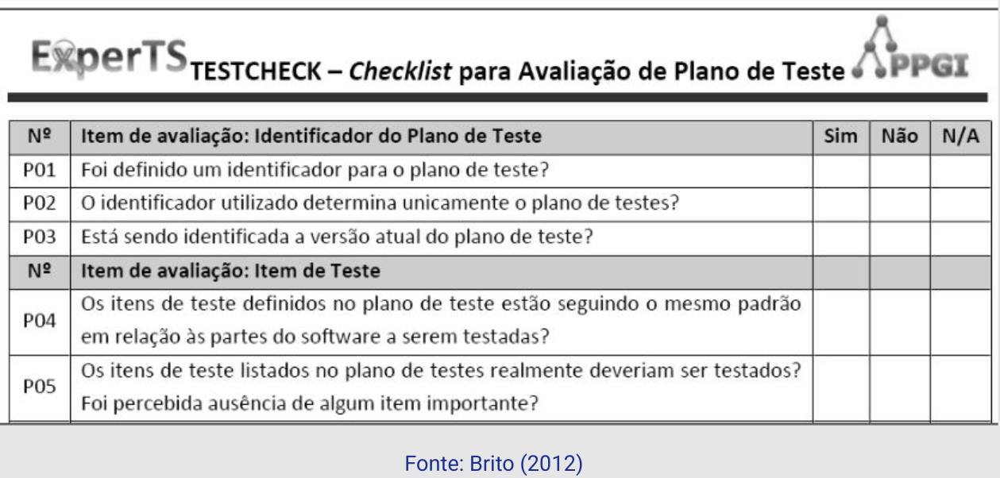
...
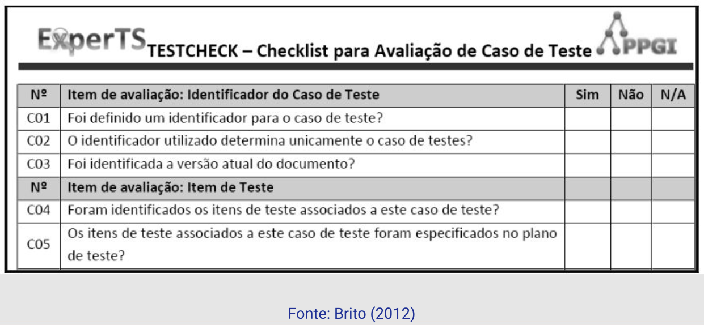
...
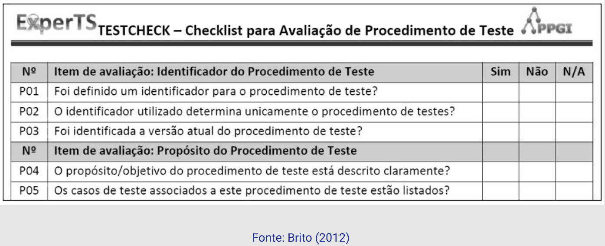
...
Para finalizar...
- A atividade de Teste de Software é composta por técnicas estáticas e dinâmicas.
- As técnicas estáticas acompanham o processo de desenvolvimento.
- Complementam o Teste de Software (dinâmica).
- Importantes para redução dos custos de desenvolvimento.